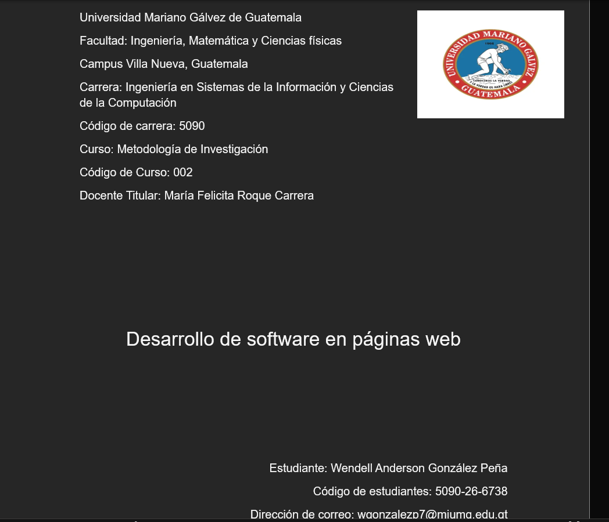
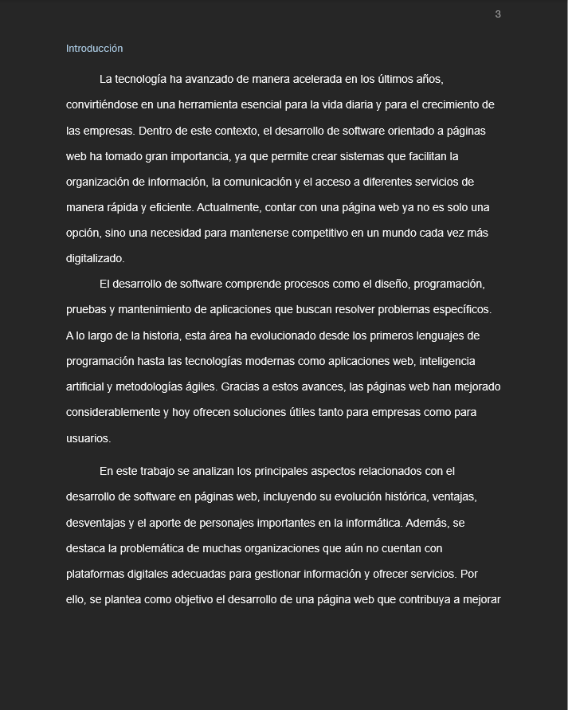

El proyecto de Metodología de la Investigación se centra en la realización de una tesis para investigar y analizar un tema específico del campo de estudio. Este proyecto implica la aplicación de métodos científicos para recopilar, analizar e interpretar datos con el fin de responder a una pregunta de investigación o probar una hipótesisEste proyecto consiste en la elaboración de una tesis académica como parte del proceso de formación profesional, con el objetivo de investigar y proponer una solución a una problemática específica dentro del área de estudio. Durante su desarrollo se aplican conocimientos teóricos y prácticos adquiridos en la carrera, utilizando métodos de investigación, recolección de información y análisis de datos. Esto permite estructurar el trabajo de manera ordenada y fundamentada, asegurando resultados claros y confiables. Además, este proceso fortalece habilidades como la redacción académica, el pensamiento crítico, la organización de información y el uso de fuentes confiables. La tesis representa una oportunidad para demostrar las competencias adquiridas y aportar conocimientos relevantes al campo de estudio.

El objetivo de este proyecto es conocer como es que se realiza un tesis desde su caratula hasta su anexos, como investigando y siguiendo los pasos se puede llegar a entregar una buena tesis. La realizacion de esta nos va ayudar no solo en este proyecto si no tambien nos sirvira en un futuro para desarrollar una tesis para cerrar pensu.

En conclusión, el proyecto de Metodología de la Investigación ha permitido comprender los principios y técnicas fundamentales para llevar a cabo una investigación científica rigurosa. A través de la implementación de metodologías adecuadas, se ha podido estructurar el proceso de investigación y analizar los datos obtenidos, lo que contribuye a la generación de conocimiento útil y aplicable en el campo de estudio. Con esto conocido se puede hacer una muy buena tesis con todos sus datos bien estructurado la cual esta misma nos puede ayudar en el dia de mañana para poder realizar nuestra tesis final